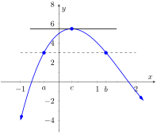
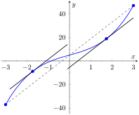

We motivate this section with the following question: Suppose you leave your house and drive to your friend's house in a city \(100\) miles away, completing the trip in two hours. At any point during the trip do you necessarily have to be going \(50\) miles per hour?
In answering this question, it is clear that the average speed for the entire trip is 50 mph (i.e. \(100\) miles in \(2\) hours), but the question is whether or not your instantaneous speed is ever exactly 50 mph. More simply, does your speedometer ever read exactly 50 mph?. The answer, under some very reasonable assumptions, is “yes.”
Let's now see why this situation is in a calculus text by translating it into mathematical symbols.
First assume that the function \(y = f(t)\) gives the distance (in miles) traveled from your home at time \(t\) (in hours) where \(0\le t\le 2\text{.}\) In particular, this gives \(f(0)=0\) and \(f(2)=100\text{.}\) The slope of the secant line connecting the starting and ending points \((0,f(0))\) and \((2,f(2))\) is therefore
The slope at any point on the graph itself is given by the derivative \(\fp(t)\text{.}\) So, since the answer to the question above is “yes,” this means that at some time during the trip, the derivative takes on the value of 50 mph. Symbolically,
How about more generally? Given any function \(y=f(x)\) and a range \(a\le x\le b\) does the value of the derivative at some point between \(a\) and \(b\) have to match the slope of the secant line connecting the points \((a,f(a))\) and \((b,f(b))\text{?}\) Or equivalently, does the equation \(\fp(c) = \frac{f(b)-f(a)}{b-a}\) have to hold for some \(a \lt c \lt b\text{?}\)
Let's look at two functions in an example.
Example3.2.2.Comparing average and instantaneous rates of change.
with \(a=-1\) and \(b=1\) as shown in Figure 3.2.3. Both functions have a value of \(1\) at \(a\) and \(b\text{.}\) Therefore the slope of the secant line connecting the end points is \(0\) in each case. But if you look at the plots of each, you can see that there are no points on either graph where the tangent lines have slope zero. Therefore we have found that there is no \(c\) in \([-1,1]\) such that
So what went “wrong”? It may not be surprising to find that the discontinuity of \(f_1\) and the corner of \(f_2\) play a role. If our functions had been continuous and differentiable, would we have been able to find that special value \(c\text{?}\) This is our motivation for the following theorem.
Theorem3.2.4.The Mean Value Theorem of Differentiation.
Let \(y=f(x)\) be a continuous function on the closed interval \([a,b]\) and differentiable on the open interval \((a,b)\text{.}\) There exists a value \(c\text{,}\)\(a \lt c \lt b\text{,}\) such that
That is, there is a value \(c\) in \((a,b)\) where the instantaneous rate of change of \(f\) at \(c\) is equal to the average rate of change of \(f\) on \([a,b]\text{.}\)
Note that the reasons that the functions in Example 3.2.2 fail are indeed that \(f_1\) has a discontinuity on the interval \([-1,1]\) and \(f_2\) is not differentiable at the origin.
We will give a proof of the Mean Value Theorem below. To do so, we use a fact, called Rolle's Theorem, stated here.
Theorem3.2.5.Rolle's Theorem.
Let \(f\) be continuous on \([a,b]\) and differentiable on \((a,b)\text{,}\) where \(f(a) = f(b)\text{.}\) There is some \(c\) in \((a,b)\) such that \(\fp(c) = 0\text{.}\)
Consider Figure 3.2.7 where the graph of a function \(f\) is given, where \(f(a) = f(b)\text{.}\) It should make intuitive sense that if \(f\) is differentiable (and hence, continuous) that there would be a value \(c\) in \((a,b)\) where \(\fp(c)=0\text{;}\) that is, there would be a relative maximum or minimum of \(f\) in \((a,b)\text{.}\) Rolle's Theorem guarantees at least one; there may be more.

Figure3.2.7.A graph of \(f(x) = x^3-5x^2+3x+5\text{,}\) where \(f(a) = f(b)\text{.}\) Note the existence of \(c\text{,}\) where \(a\lt c\lt b\text{,}\) where \(\fp(c)=0\text{.}\)
Rolle's Theorem is presented here as a stepping stone toward the Mean Value Theorem, but it's a useful result in its own right. It often turns up as a tool in mathematical problem solving. The video in Figure 3.2.8 illustrates one such use of Rolle's Theorem.
Figure3.2.8.Using Rolle's Theorem to show a polynomial has at most one real root
Rolle's Theorem is really just a special case of the Mean Value Theorem. If \(f(a) = f(b)\text{,}\) then the average rate of change on \((a,b)\) is \(0\text{,}\) and the theorem guarantees some \(c\) where \(\fp(c)=0\text{.}\) We will prove Rolle's Theorem, then use it to prove the Mean Value Theorem.
Let \(f\) be differentiable on \((a,b)\) where \(f(a)=f(b)\text{.}\) We consider two cases.
Case.
Consider the case when \(f\) is constant on \([a,b]\text{;}\) that is, \(f(x) = f(a) = f(b)\) for all \(x\) in \([a,b]\text{.}\) Then \(\fp(x) = 0\) for all \(x\) in \([a,b]\text{,}\) showing there is at least one value \(c\) in \((a,b)\) where \(\fp(c)=0\text{.}\)
Case.
Now assume that \(f\) is not constant on \([a,b]\text{.}\) The Extreme Value Theorem guarantees that \(f\) has a maximal and minimal value on \([a,b]\text{,}\) found either at the endpoints or at a critical value in \((a,b)\text{.}\) Since \(f(a)=f(b)\) and \(f\) is not constant, it is clear that the maximum and minimum cannot both be found at the endpoints. Assume, without loss of generality, that the maximum of \(f\) is not found at the endpoints. Therefore there is a \(c\) in \((a,b)\) such that \(f(c)\) is the maximum value of \(f\text{.}\) By Theorem 3.1.15, \(c\) must be a critical number of \(f\text{;}\) since \(f\) is differentiable, we have that \(\fp(c) = 0\text{,}\) completing the proof of the theorem.
We know \(g\) is differentiable on \((a,b)\) and continuous on \([a,b]\) since \(f\) is. We can show \(g(a)=g(b)\) (it is actually easier to show \(g(b)-g(a)=0\text{,}\) which suffices). We can then apply Rolle's theorem to guarantee the existence of \(c\) in \((a,b)\) such that \(g'(c) = 0\text{.}\) But note that
Going back to the very beginning of the section, we see that the only assumption we would need about our distance function \(f(t)\) is that it be continuous and differentiable for \(t\) from \(0\) to \(2\) hours (both reasonable assumptions). By the Theorem 3.2.4, we are guaranteed a time during the trip where our instantaneous speed is 50 mph. This fact is used in practice. Some law enforcement agencies monitor traffic speeds while in aircraft. They do not measure speed with radar, but rather by timing individual cars as they pass over lines painted on the highway whose distances apart are known. The officer is able to measure the average speed of a car between the painted lines; if that average speed is greater than the posted speed limit, the officer is assured that the driver exceeded the speed limit at some time.
Note that the Theorem 3.2.4 is an existence theorem. It states that a special value \(c\)exists, but it does not give any indication about how to find it. It turns out that when we need the Theorem 3.2.4, existence is all we need.
Example3.2.9.Using the Mean Value Theorem.
Consider \(f(x) = x^3+5x+5\) on \([-3,3]\text{.}\) Find \(c\) in \([-3,3]\) that satisfies the Theorem 3.2.4.
We have found two values \(c\) in \([-3,3]\) where the instantaneous rate of change is equal to the average rate of change; the Theorem 3.2.4 guaranteed at least one. In Figure 3.2.10, \(f\) is graphed with a line representing the average rate of change; the lines tangent to \(f\) at \(x=\pm \sqrt{3}\) are also given. Note how these lines are parallel (i.e., have the same slope) to the secant line.

Figure3.2.10.Demonstrating the Mean Value Theorem in Example 3.2.9
While the Theorem 3.2.4 has practical use (for instance, the speed monitoring application mentioned before), it is mostly used to advance other theory. We will use it in the next section to relate the shape of a graph to its derivative.
Before ending this section, we give video presentations of some of the basic theoretical applications of the Mean Value Theorem.
First, we recall that the derivative of any constant function is zero. Now, suppose that you know the derivative of some function is zero. Is the converse true? That is, are constant functions the only ones whose derivative is zero? The Mean Value Theorem says yes.
Figure3.2.11.Showing that a function with zero derivative is constant
Using this result, we can establish another result which will be useful when we study antiderivatives: if two functions have the same derivative, then they differ by a constant.
Figure3.2.12.Showing that two functions with the equal derivatives differ by a constant
We end this section with one more proof involving the Mean Value Theorem; this time, establishing a property of the sine function.
Figure3.2.13.Demonstrating a property of the sine function
ExercisesExercises
Terms and Concepts
1.
Explain in your own words what the Mean Value Theorem states.
2.
Explain in your own words what Rolle’s Theorem states.
Problems
Exercise Group.
A function \(f(x)\) and interval \([a,b]\) are given. Check if Rolle's Theorem can be applied to \(f\) on \([a,b]\text{;}\) if so, find \(c\) in \((a,b)\) such that \(\fp(c)=0\text{.}\)
3.
\(f(x) = 6\) on \([-1,1]\)
Explain why Rolle's Theorem can or cannot be applied.
4.
\(f(x) = 6x\) on \([-1,1]\)
Explain why Rolle's Theorem can or cannot be applied.
5.
\(f(x) = x^2+x-6\) on \([-3,2]\)
Explain why Rolle's Theorem can or cannot be applied.
6.
\(f(x) = x^2+x-2\) on \([-3,2]\)
Explain why Rolle's Theorem can or cannot be applied.
7.
\(f(x) = x^2+x\) on \([-2,2]\)
Explain why Rolle's Theorem can or cannot be applied.
8.
\(f(x) = \sin(x)\) on \([\pi/6,5\pi/6]\)
Explain why Rolle's Theorem can or cannot be applied.
9.
\(f(x) = \cos(x)\) on \([0,\pi]\)
Explain why Rolle's Theorem can or cannot be applied.
10.
\(f(x) = \frac{1}{x^2-2x+1}\) on \([0,2]\)
Explain why Rolle's Theorem can or cannot be applied.
Exercise Group.
A function \(f(x)\) and interval \([a,b]\) are given. Check if The Mean Value Theorem of Differentiation can be applied to \(f\) on \([a,b]\text{;}\) if so, find \(c\) in \((a,b)\) guaranteed by the Mean Value Theorem.
11.
\(f(x) = x^2+3x-1\) on \([-2,2]\)
Explain why the Mean Value Theorem can or cannot be applied.
12.
\(f(x) = 5x^2-6x+8\) on \([0,5]\)
Explain why the Mean Value Theorem can or cannot be applied.
13.
\(f(x) = \sqrt{9-x^2}\) on \([0,3]\)
Explain why the Mean Value Theorem can or cannot be applied.
14.
\(f(x) = \sqrt{25-x}\) on \([0,9]\)
Explain why the Mean Value Theorem can or cannot be applied.
15.
\(f(x) = \frac{x^2-9}{x^2-1}\) on \([0,2]\)
Explain why the Mean Value Theorem can or cannot be applied.
16.
\(f(x) = \ln(x)\) on \([1,5]\)
Explain why the Mean Value Theorem can or cannot be applied.
17.
\(f(x) = \tan(x)\) on \([-\pi/4,\pi/4]\)
Explain why the Mean Value Theorem can or cannot be applied.
18.
\(f(x) = x^3-2x^2+x+1\) on \([-2,2]\)
Explain why the Mean Value Theorem can or cannot be applied.
19.
\(f(x) = 2x^3-5x^2+6x+1\) on \([-5,2]\)
Explain why the Mean Value Theorem can or cannot be applied.
20.
\(f(x) = \sin^{-1}(x)\) on \([-1,1]\)
Explain why the Mean Value Theorem can or cannot be applied.
Review
21.
Find the extreme values of \(f(x) = {x^{2}-5x+3}\) on \([-2,5]\text{.}\)
22.
Describe the critical points of \(f(x) = \cos(x)\text{.}\)
23.
Describe the critical points of \(f(x) = \tan(x)\text{.}\)